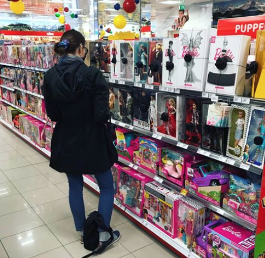
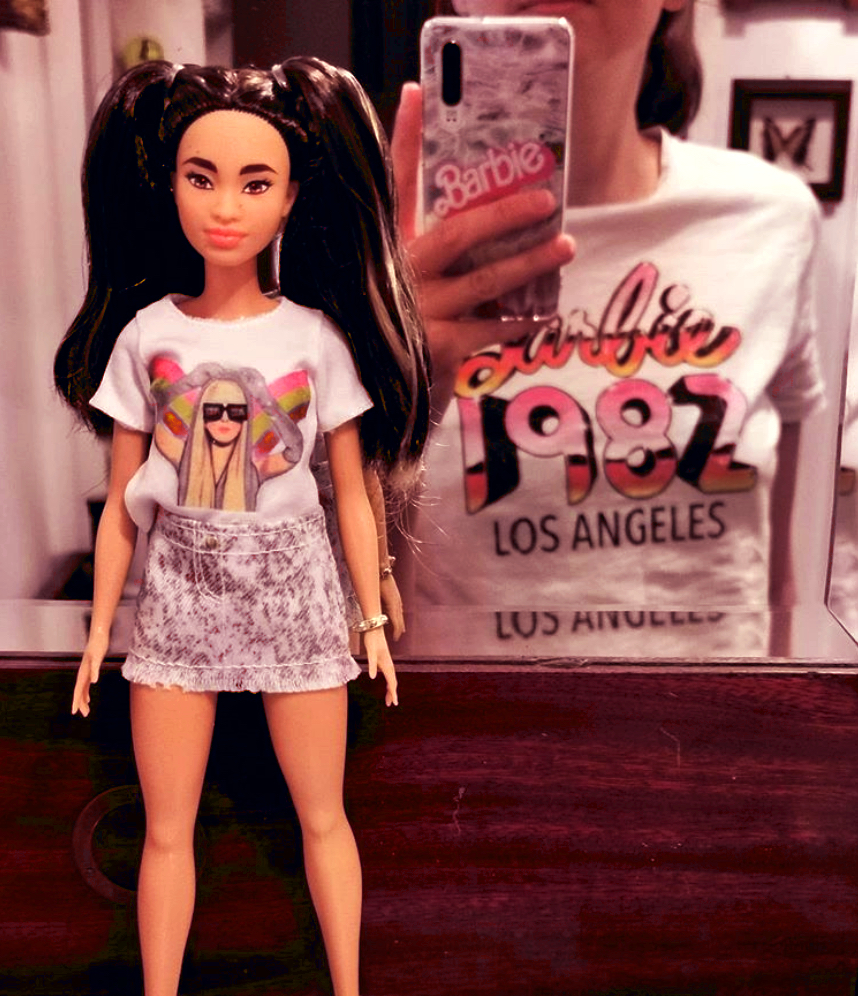
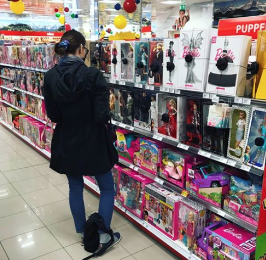
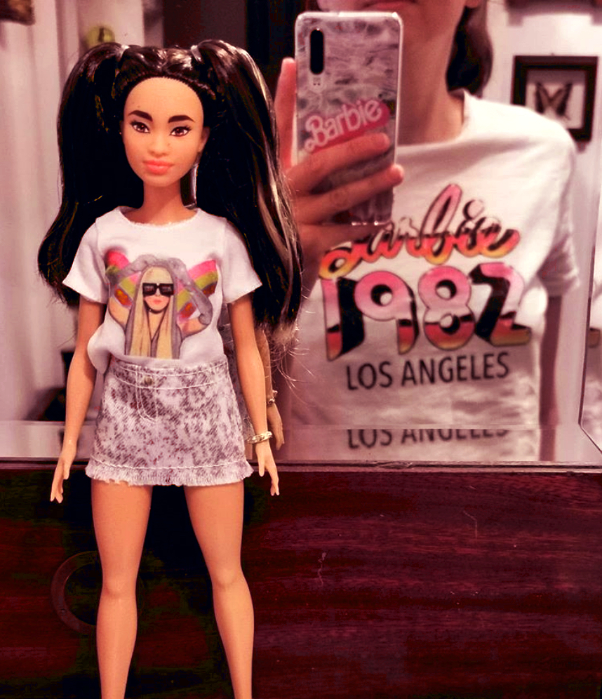

Hello dear Barbie fan and visitor, here are some facts about me.
Both of them were my biggest wish, but my parents did not have enough money to buy them. I kept staring at the beauty of the Steffie face and those gorgeous blue fashions and dreamt about one day growing up and being able to afford such beauties. But would I then be still able to play with and enjoy them?
 



I enjoy watching (even seemingly unprofessional) doll videos online. Whenever I find the time I video blog in an amateur and super improvised manner about my own thrift hauls, marketplace or ebay doll purchases and newly acquired gems on my YouTube channel.
Currently I am building up my dollstore on instagram (even though I have been selling on ebay for years, find me under my name there).
I liquidate parts of my old collection or offer up dolls from friends or trusted dealers who changed their tastes or want to switch up their collections as well.
I ship worldwide, although the sad and dramatic global pandemic has made it hard for me to effectively reach some countries by post without risking a huge delay.
I love getting positive feedback and seeing the happiness dolls can bring. Most of my customers send me pictures of their buys from the DodaDollStore, but this one especially stood out in 2020, so I want to share it with you ❤
(photo by K. Karwat) please note: pictures + content is © DodaDolls (unless otherwise specified).
reproduction, sharing or altering without written consent is prohibited.